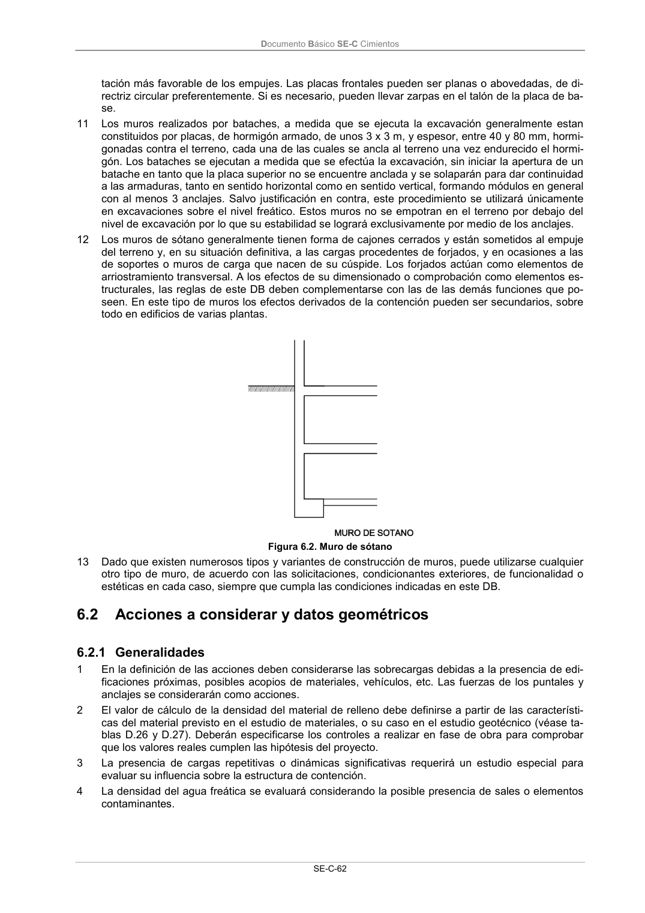

DB-SE-C Cimientos · edición 2019-12-20 · capa oficial
Documento DB-SE-C-oficial · SHA-256 del PDF a71133f4b0dca253e45ea3071c70f2a512354bcc5cd841bf89b1a502f567ac5e
Copia fiel del PDF fuente · Fuente oficial
Ficha de la disposición en la fuente oficial
Formatos: JSON del segmento · Markdown
Acciones a considerar y datos geométricos 6.2.1 Generalidades 6.2.1 Generalidades 1 En la definición de las acciones deben considerarse las sobrecargas debidas a la presencia de edi- ficaciones próximas, posibles acopios de materiales, vehículos, etc. Las fuerzas de los puntales y anclajes se considerarán como acciones. 2 El valor de cálculo de la densidad del material de relleno debe definirse a partir de las característi- cas del material previsto en el estudio de materiales, o su caso en el estudio geotécnico (véase ta- blas D.26 y D.27). Deberán especificarse los controles a realizar en fase de obra para comprobar que los valores reales cumplen las hipótesis del proyecto. 3 La presencia de cargas repetitivas o dinámicas significativas requerirá un estudio especial para evaluar su influencia sobre la estructura de contención. 4 La densidad del agua freática se evaluará considerando la posible presencia de sales o elementos contaminantes. Documento Básico SE-C Cimientos SE-C-63 5 En el cálculo de elementos de contención, sobre todo en los provisionales, se tendrán en cuenta las posibles variaciones espaciales y temporales de la temperatura. Esto puede ser de especial impor- tancia por su repercusión en la tensión de los codales. 6 El cálculo de un elemento de contención constituye un proceso iterativo en el que, partiendo de su dimensionado previo, se comprueba si la seguridad para resistir las diversas acciones es suficiente, modificando el diseño en caso contrario. 7 Las acciones principales a considerar son: a) el peso propio del elemento de contención, de acuerdo con el material previsto para su ejecu- ción; b) el empuje y peso del terreno circundante, teniendo en cuenta la posición del nivel freático; c) los empujes debidos al agua, bien en forma de presión intersticial, subpresión o presión de fil- tración; d) las sobrecargas sobre la estructura de contención o sobre el terreno de trasdós; e) los efectos sísmicos, cuando sea necesaria su previsión por la zona de emplazamiento de la estructura de contención; f) excepcionalmente, los empujes de terrenos expansivos, los debidos a la congelación del agua en el suelo, los inducidos por la compactación del relleno o las incidencias constructivas previ- sibles. 8 El cálculo de empujes para el análisis de estados límite últimos se basa generalmente en la hipó- tesis de que existe suficiente rotación o traslación del elemento de contención para llegar a un esta- do de rotura. Esto se debe tener en cuenta en los casos en los que existan construcciones o servi- cios en su entorno. 9 Los estados de empuje dependen del desplazamiento del terreno y son los siguientes: a) empuje activo: cuando el elemento de contención gira o se desplaza hacia el exterior bajo las presiones del relleno o la deformación de su cimentación hasta alcanzar unas condiciones de empuje mínimo; b) empuje pasivo: cuando el elemento de contención es comprimido contra el terreno por las car- gas transmitidas por una estructura u otro efecto similar hasta alcanzar unas condiciones de máximo empuje; c) empuje en reposo: cuando se produce un estado intermedio que es el correspondiente al es- tado tensional inicial en el terreno.
